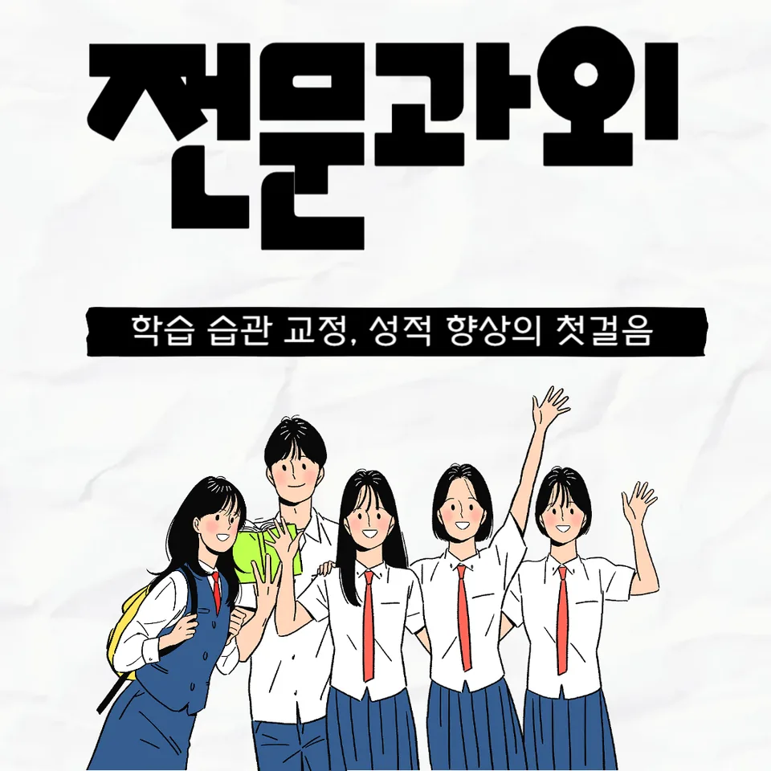

PageType : SUBJECT
URL : /경기도과외/안산시과외/상록구과외/이동과외/이동영어과외/
지역 교육환경이 영어 학습에 미치는 영향
같은 영어과외라도 지역의 학습 분위기는 학생의 리듬을 바꿉니다. 예를 들어 수업이 많은 날에는 듣기 훈련이 상대적으로 쉽게 이어지지만, 이동영어과외처럼 시간과 동선이 정해지는 형태에서는 도착 직후의 집중력이 성패를 좌우합니다. 학생들은 “오늘 배운 내용”이 “오늘 복습”으로 연결되는 순간에 영어 학습의 부담이 줄어든다고 느끼곤 합니다.
지역마다 학교 주변의 경쟁 강도가 달라지면, 시험 전에는 단기 문항 감각이 먼저 올라가고 독해·문장 이해는 뒤따라 늦게 따라오는 경우가 많습니다. 이때 학부모는 학습 시간을 늘리려 하지만, 실상은 수업과 숙제가 끊기는 패턴이 문제인 경우가 더 흔합니다. 이동영어과외 환경에서는 공부 습관이 고정되기 쉬워 장기 복습을 설계하기가 비교적 수월해집니다.
또한 대면 과외가 익숙한 학생과 온라인 자원이 익숙한 학생의 차이도 드러납니다. 어떤 학생은 어휘를 “외워야 하는 양”으로만 받아들이고, 다른 학생은 문장 속에서 어휘의 역할을 먼저 찾습니다. 지역 교육 문화가 이런 관점을 더 이르게 만들거나 늦추기도 합니다.
학교마다 달라지는 영어 평가 방식
학교마다 영어 평가의 중심이 조금씩 달라서, 수업에서 다루는 학습 흐름이 실제 내신과 시험의 결을 따라야 합니다. 어떤 학교는 내신에서 독해 비중이 높게 나타나고, 어떤 학교는 수행평가에서 말하기·쓰기의 과정이 평가로 연결됩니다. 이동영어과외는 그 차이를 수업 운영에 반영하는 방식으로 활용될 수 있는데, 핵심은 “성취 기준을 문항 유형으로 번역”하는 태도입니다.
수행평가가 포함된 학교에서는 문법을 설명으로 끝내기보다, 구문이 어떻게 자기 문장으로 옮겨지는지 경험하는 단계가 중요합니다. 학생이 문장 틀을 복사하듯 따라 하면 겉보기에는 빨라지지만, 시험 전에는 변형 문제에서 흔들립니다. 그래서 수업 중에는 같은 문법 항목이라도 실제 문항에서 관찰되는 실수를 먼저 찾는 연습이 필요합니다.
또 한 가지는 학교 수업 속도입니다. 진도가 빠른 학교의 학생은 듣기를 따라가다가 어휘가 누적되지 않아 어느 구간부터는 읽기에서도 멈칫합니다. 반대로 진도가 비교적 안정적인 학교의 학생은 복습이 밀리지 않아서 영어 실력의 상승이 더 매끈하게 보일 수 있습니다.
학생들이 영어에서 어려움을 느끼는 시점
대부분의 학생은 “처음엔 이해가 되는 것 같은데 어느 순간 막힌다”는 구간을 한 번 이상 겪습니다. 보통은 듣기에서 속도가 빨라지면서 낱말이 들려도 의미가 연결되지 않는 시점에 흔들립니다. 그다음 단계에서 독해가 느려지고, 문장 구조를 따라가지 못해 어휘의 뜻을 찾아도 문장 이해가 완성되지 않습니다.
이때 학생들은 단순히 공부 시간을 늘리면 된다고 생각하지만, 실제로는 학습의 관점이 바뀌어야 합니다. 이동영어과외처럼 비교적 짧은 시간에 집중해야 하는 구조에서는, 문제를 풀기 전에 필요한 정보가 무엇인지 확인하는 습관이 빨리 자리 잡습니다. 질문을 스스로 만드는 학생일수록 오답의 이유가 “모르겠다”에서 “왜 여기서 틀렸나”로 바뀝니다.
학기 중간이나 시험 직전이 되면 흥미가 급격히 줄어드는 학생도 있습니다. 교재가 어려워서가 아니라, 이전에 했던 오답이 다시 나타날 때 복습이 끊겨 있기 때문입니다. 복습과 오답 정리가 이어질 때 영어 실력은 다시 회복되지만, 그렇지 않으면 스스로를 탓하며 공부 습관이 무너집니다.
학년 변화에 따른 영어 학습의 차이
학년이 올라갈수록 영어 학습은 “양”보다 “연결”의 문제로 바뀝니다. 하위 학년에서는 단어와 문장 단위가 중심이 되지만, 상위로 갈수록 구문이 누적되어야 독해가 부드럽게 진행됩니다. 학생이 문법을 따로 정리해도 실제 문장 속에서 어떤 기능을 하는지 연결하지 못하면, 내신 문항에서 점수가 흔들립니다.
이동영어과외는 학습 속도가 다른 학생을 함께 다루는 상황에서 특히 의미가 커집니다. 같은 진도를 보더라도 어떤 학생은 어휘 축적이 빠르고, 어떤 학생은 문장 이해가 느립니다. 그래서 자기주도학습을 시작할 때 “무엇을 먼저 확인해야 하는지” 순서를 잡아주는 것이 중요합니다. 듣기·읽기·어휘·문법이 분리되지 않고 한 흐름으로 이어지도록 설계하면, 학년 변화가 오히려 성장의 계기가 됩니다.
또한 학부모가 느끼는 압박은 학년이 올라갈수록 커집니다. 시험 범위가 넓어질 때, 아이가 무엇을 놓치고 있는지 파악하기가 어려워지기 때문입니다. 이때는 결과만 보지 말고, 오답이 반복되는 유형과 복습 빈도를 함께 점검해야 학습 부담을 줄일 수 있습니다.
내신과 수행평가를 함께 준비하는 방법
내신은 시험 범위가 구체적이고, 수행평가는 과정의 흔적이 남는 방식으로 나타나곤 합니다. 두 영역을 따로 준비하면 학생은 “공부하는데 점수는 왜 오르지?”라는 혼란을 겪습니다. 이동영어과외에서는 내신 문항에서 자주 쓰는 어휘와 문장 구조를 수행평가의 문장 작성에 옮겨 보게 하여, 학교에서 요구하는 결과물과 학습 과정이 맞물리도록 합니다.
독해 중심 내신 학교라면 문장 구조를 먼저 잡고, 그다음에 어휘가 왜 선택됐는지 확인하는 흐름이 필요합니다. 수행평가가 있는 학교라면 문법을 문장으로 구현하는 경험이 중요해져서, 같은 구문이라도 질문→초안→수정→재점검 순서로 반복됩니다. 학생이 오답을 두 번째로 보기 시작할 때, 복습은 ‘틀린 문제를 다시 푸는 시간’이 아니라 ‘같은 실수를 하지 않게 만드는 시간’으로 바뀝니다.
시험 기간에는 학습 패턴이 바뀌기 쉽습니다. 처음엔 빠르게 진도를 나가다가 마지막 주에 복습이 줄어드는 경우가 잦습니다. 이때 시간 효율은 새 문제 풀이 속도가 아니라, 오답의 재출현을 줄이는 선택에서 드러납니다. 학교 수업과 시험의 속도를 함께 고려해, 듣기·읽기 균형이 무너지지 않도록 조정하는 것이 도움이 됩니다.
꾸준한 학습 습관이 만드는 영어 실력
영어 실력은 한 번에 점프하기보다, 공부습관이 누적되며 만들어집니다. 특히 어휘는 하루에 이해하는 것보다 일주일 뒤에도 떠올리는지가 중요합니다. 그래서 이동영어과외에서는 수업 직후 짧은 정리와, 다음 날 다시 만나는 방식으로 복습의 연결 고리를 만드는 데 집중합니다. 학생은 “또 까먹었다”가 아니라 “아직도 기억한다/다시 찾는다”로 피드백을 받게 됩니다.
자기주도학습이 자리 잡는 과정도 비슷합니다. 처음에는 학습 계획을 제공받아 따라가지만, 어느 시점부터 학생이 시험 범위와 자신의 약점을 스스로 매칭합니다. 그 순간부터 듣기는 무작정 듣기가 아니라, 문장 이해를 위한 정보 포인트를 찾아가는 활동이 됩니다. 읽기에서는 문단의 역할을 파악하며 문장 이해가 안정화됩니다.
학습이 꾸준해지면 오답의 의미도 달라집니다. 같은 유형이 다시 틀리더라도 “왜 틀렸는지”가 표면화되기 때문에, 영어 학습이 불안이 아니라 성장 기록이 됩니다. 결과적으로 학생의 흥미가 오래 유지되고, 학부모도 불필요한 압박 대신 확인 가능한 지점을 갖게 됩니다.
복습과 오답 관리가 중요한 이유
복습은 단순 반복이 아니라, 기억의 경로를 다시 만드는 과정입니다. 학생이 독해를 어려워할 때 종종 단어 뜻만 확인하고 넘어가는데, 그럴수록 오답은 같은 형태로 반복됩니다. 이동영어과외에서는 오답을 “정답을 맞히지 못한 이유”로 분류하도록 유도해, 구문·어휘·문법 중 무엇에서 끊겼는지 찾아갑니다.
오답이 누적되면 시험이 다가올수록 불안이 커지고, 공부 습관은 점점 회피로 기울 수 있습니다. 그래서 복습은 양을 늘리는 방식보다, 반복되는 실수를 줄이는 방식으로 설계되어야 합니다. 학생이 오답 노트를 작성하더라도 한 번 보고 끝나면 효과가 약하고, 일정한 간격으로 다시 확인할 때 장기 기억으로 연결됩니다.
또한 오답 관리는 듣기와 읽기의 균형을 회복하는 데도 도움이 됩니다. 듣기에서 놓친 포인트가 읽기에서도 같은 이유로 흔들리면, 학생은 내용을 ‘공부하지 못했다’고 느끼지만 사실은 ‘주의해야 할 단서’를 놓치고 있던 경우가 많습니다. 복습이 이어질수록 학생은 자기 점검 능력을 키우고, 시험 기간에도 학습 리듬을 잃지 않습니다.
- 학교 시험 범위와 학습 계획이 연결되고 있는지 확인합니다.
- 독해·문법·어휘를 분리하지 않고 함께 학습하는 습관을 기릅니다.
- 오답의 원인을 분석하고 반복되는 실수를 줄이는 과정을 이어갑니다.
- 정기적인 복습으로 학습 내용을 장기 기억으로 연결합니다.
영어 학습에서 확인해야 할 핵심 요소
수업이 잘 진행되는지 확인하려면, 단순히 문제를 푸는 속도보다 학습 과정의 연결 상태를 봐야 합니다. 예를 들어 학생이 문장 이해를 건너뛰고 바로 해설만 읽으면 다음 시험에서 다시 비슷한 구문에서 멈춥니다. 이동영어과외에서는 구문 이해→어휘 선택→문법 적용이 하나의 흐름으로 이어지는지 점검하며, 학생이 스스로 설명할 수 있는지 확인합니다.
지역 학생들에게는 공통적으로 시험 기간에 시간 배분이 무너지거나, 특정 영역만 과도하게 늘리는 경향이 관찰됩니다. 독해를 늘리면 듣기가 약해지고, 듣기를 늘리면 어휘 누적이 늦어지는 식입니다. 그래서 학습 계획은 주간 단위로 균형을 확인하고, 학교에서 요구하는 내신 형태에 맞게 조정하는 것이 좋습니다.
끝으로, 자기주도학습은 “혼자 하는 시간”이 아니라 “스스로 수정하는 시간”에서 시작됩니다. 학생이 오답을 통해 다음 학습에서 무엇을 바꿀지 정리할 수 있을 때, 공부습관은 오래 갑니다. 학부모는 결과를 기다리기보다, 독해와 문장 이해, 어휘 축적, 듣기의 주의 포인트가 실제로 누적되는지를 함께 확인하면 좋습니다.
자주 묻는 질문
영어 학습은 언제부터 체계적으로 준비하는 것이 좋을까요?
학교 수업이 시작된 뒤에도 “어휘 누적-구문 이해-문장 적용”이 끊기지 않도록, 중간에 막히는 시점(듣기 속도 상승, 독해 지연, 오답 반복)이 보일 때부터 계획을 고정하는 편이 효과적입니다. 이동영어과외는 동선과 시간이 정해져 있어 복습 루틴을 만들기 쉬운 장점이 있습니다.
학교 내신과 모의고사는 어떻게 함께 준비해야 하나요?
내신 범위에서 반복되는 어휘와 구문을 모의고사 문항의 변형에도 옮겨보며 준비하는 방식이 안정적입니다. 먼저 학교 시험에서 요구하는 독해·문장 이해의 기준을 확인하고, 그 기준을 기준으로 오답을 분류해 복습에 반영하면 학습 효율이 올라갑니다.
영어 독해 실력은 어떤 과정으로 향상될 수 있나요?
독해는 글을 빨리 읽는 기술보다, 문장 구조를 따라가며 의미를 연결하는 경험에서 강화됩니다. 학생이 문장 이해에서 끊기는 지점을 찾아 어휘 선택과 구문 기능을 다시 확인하고, 같은 실수가 다음 문항에서 반복되지 않도록 복습과 오답 관리로 연결할 때 변화가 나타납니다.
어휘와 문법은 어떤 순서로 학습하는 것이 효과적인가요?
어휘는 뜻을 아는 것에서 끝나지 않고 문장 속에서 어떤 역할을 하는지 확인해야 합니다. 문법은 설명을 오래 붙잡기보다 구문으로 묶어 실제 문항에서 적용해보는 순서가 좋습니다. 이동영어과외에서는 독해·문장 이해 흐름 안에서 어휘와 문법을 같이 만나게 하는 구성이 도움이 됩니다.
공부 습관을 꾸준히 유지하려면 무엇이 중요할까요?
꾸준함은 의지보다 연결 구조에서 나옵니다. 수업 후 정리와 다음 날 재확인 같은 짧은 복습 루틴이 자리 잡으면 공부습관이 흔들리지 않고, 오답이 반복될 때도 원인을 점검하며 다음 학습을 조정할 수 있습니다. 그 과정이 자기주도학습으로 이어져 영어 실력이 안정적으로 성장합니다.
